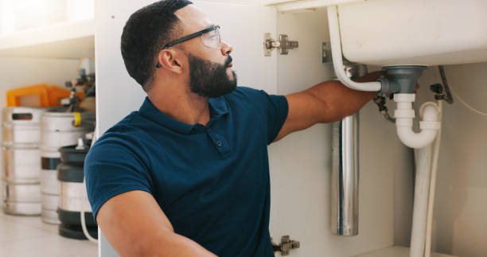
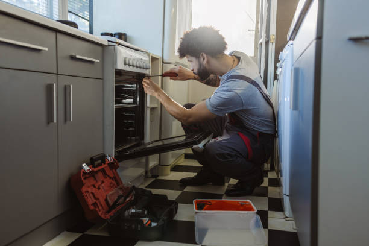

Need dependable handyman solutions in Avalon California ? Our skilled team delivers top-quality repairs, installations, and upgrades. Affordable, professional, and always on time—contact us for a free quote!
Click Here To Call Us (877) 848-1711Are you searching for reliable and professional handyman services in Avalon California ? Look no further! Our experienced team is here to tackle all your home improvement and repair needs with precision and care. Whether it’s a minor repair or a major project, we’ve got the skills and tools to get the job done right the first time.
We specialize in a wide range of services, including plumbing, electrical work, painting, carpentry, and appliance installation. Our commitment to excellence ensures that every project, big or small, is handled with the utmost professionalism. From fixing leaky faucets to assembling furniture, we take pride in delivering efficient and cost-effective solutions tailored to your needs.
Why choose our handyman services in Avalon California ? We prioritize customer satisfaction, offering prompt service, transparent pricing, and expert craftsmanship. With years of experience, we have built a reputation for reliability and trustworthiness. Our team works diligently to ensure your home or business remains functional, safe, and aesthetically pleasing.
No need to juggle multiple contractors—our all-in-one handyman services cover it all. Contact us today for dependable and affordable solutions in Avalon California . Let us handle your to-do list, so you can focus on what matters most!
Residential & commercial Handy man
Quality services at affordable prices
Immediate 24/ 7 emergency services


When it comes to reliable handyman services in Avalon California we are your trusted experts for both residential and commercial needs. Whether you need quick repairs around your home or larger projects for your business, our team offers top-notch, cost-effective solutions that save you time and stress.
Our highly skilled professionals are equipped to handle a wide range of services, from minor repairs to complete remodels. For homeowners in Avalon California we provide everything from plumbing and electrical work to drywall installation and home improvements. For businesses, we offer tailored services to ensure your commercial property runs smoothly, including office renovations, fixture installations, and maintenance.
At Handy man, we pride ourselves on delivering exceptional customer service and high-quality craftsmanship. With years of experience in Avalon California and a strong reputation for dependability, we take the hassle out of home and business maintenance. Our goal is to make your life easier by offering fast, reliable, and affordable handyman services that meet your unique needs.
Contact us today for all your residential and commercial handyman needs in Avalon California . No job is too big or small, and we’re here to help you keep your property in perfect condition.
Residential & commercial Handy man
Quality services at affordable prices
Immediate 24/ 7 emergency services
Proper weatherproofing and insulation are essential for maintaining a comfortable home throughout every season. Our weatherproofing and insulation services ensure that your home stays warm in the winter and cool in the summer, while also reducing energy costs.
Our team specializes in assessing your home for air leaks, drafts, and inadequate insulation. We offer customized solutions that might include sealing cracks, adding insulation to attics and walls, or installing weather stripping around doors and windows.
Why choose us for your weatherproofing and insulation needs? We understand that maintaining home comfort can be challenging, which is why we focus on quality service and effective solutions. Our technicians are trained to implement the best practices in weatherization, ensuring that your home is energy-efficient and comfortable all year long.
Investing in weatherproofing and insulation can lead to significant savings on your energy bills and improved comfort in your home. Let our experienced team help you create an energy-efficient sanctuary .

Your home's siding impacts both appearance and protection. Our siding repair and installation services in Avalon California ensure that your home’s exterior remains stylish while providing the protection it needs. Whether you require minor repairs or complete installation, we use high-quality materials and expert techniques. Our commitment to excellence guarantees that your siding will withstand the elements and enhance your home's curb appeal.

Embracing smart home technology can greatly enhance your lifestyle, offering comfort, security, and convenience at your fingertips. Our smart home installation and setup services in Avalon California cater to all your tech needs, from smart lighting and thermostats to security systems and home automation. Our skilled technicians ensure seamless integration of smart devices, creating an interconnected environment that aligns with your lifestyle. Choose us to simplify your life with reliable smart home solutions.

Every season brings unique maintenance challenges for homeowners. Our seasonal and outdoor handyman services in Avalon California are designed to keep your home safe and functional year-round. From winterization and summer prepping to outdoor repairs and upkeep, we have you covered. Our team understands the demands of seasonal changes and is here to help protect your home investment. Count on us for dependable service that caters to the specific needs of each season.
Seasonal home maintenance is crucial for keeping your property in top shape year-round. At Handy man, we offer comprehensive spring and fall home maintenance services helping you prepare your home for changing weather conditions.
Our team conducts thorough inspections and performs necessary maintenance tasks, such as checking roofs, cleaning gutters, inspecting HVAC systems, and preparing gardens for seasonal changes. We aim to prevent problems before they arise, extending the life of your essential home systems.
Why choose us for seasonal maintenance? Our commitment to quality and attention to detail ensure that no aspect of your home is overlooked. With Handy man, you can rest easy knowing your home is ready for whatever the season may bring, with reliable service from trusted professionals .
A well-maintained yard enhances your home’s beauty and value, making it a welcoming space for you and your family. At Handy man, we offer professional yard maintenance and landscaping services in Avalon California to help you create and maintain a stunning outdoor environment.
Our team is experienced in various landscaping services, including lawn care, planting, mulch installation, and garden design. We understand that each yard is unique, and we work closely with you to develop a maintenance routine tailored to your specific needs and aesthetic goals.
Choosing Handy man means choosing quality service delivered with a personal touch. We prioritize customer satisfaction and are dedicated to helping you achieve your dream yard. Trust us for expert yard maintenance and landscaping services that elevate your outdoor spaces .

The holiday season is a time for celebration and joy, and nothing enhances the festive spirit quite like beautifully installed holiday lights. At Handy man, we provide professional holiday light installation services in Avalon California ensuring your home shines bright during the holidays.
Our team handles everything from design to installation, creating stunning displays that highlight your home’s best features. We use high-quality, safe lighting products and ensure that every aspect of the installation is secure and professional.
Why struggle with tangled lights and ladders when you can trust Handy man to do the job? We focus on providing stress-free, reliable service that allows you to enjoy the festivities. Make your holidays magical with our expert light installation services .

Outdoor furniture can take a beating from the elements, but our outdoor furniture repair and assembly services can bring your pieces back to life. Whether it’s repairs for broken chairs or the assembly of new patio sets, our experienced team handles the job efficiently. We know the importance of quality leisure time, and we ensure that your outdoor spaces are comfortable and functional. Trust us for all your outdoor furniture needs.

Your roof is one of the most critical components of your home, safeguarding you from moisture, heat, and debris. At Handy man, we specialize in roof inspection and minor repair services ensuring your roof remains in excellent condition.
Our experienced inspectors assess your roof thoroughly, identifying potential issues before they become significant problems. If repairs are necessary, we skillfully address them, using high-quality materials to ensure lasting protection for your home.
Why trust Handy man? We emphasize transparent communication, quality workmanship, and customer satisfaction. Your home’s protection is our priority, and we work diligently to keep your roof in top shape for years to come. Count on us for expert roof inspection and repair services .
Years Experience
Expert Technicians
Satisfied Clients
Compleate Projects
At Top Handyman, we pride ourselves on providing reliable and professional handyman services across all cities in Avalon California . Whether you need help with small repairs or large-scale home improvement projects, our skilled team is here to ensure your needs are met with precision and care.
Expertise and Experience You Can Trust
With years of experience in the industry, our handymen have the knowledge and skills to handle a wide variety of tasks. From fixing leaky faucets and installing light fixtures to drywall repair and home renovations, we have the expertise to get the job done right the first time.
Prompt and Efficient Service
We understand how valuable your time is, which is why we focus on delivering fast, efficient service without compromising quality. Our team arrives on time, fully equipped, and ready to tackle your project, ensuring minimal disruption to your daily routine.
Affordable Pricing, No Hidden Fees
At Top Handyman, we believe in offering transparent pricing with no surprises. Our affordable rates and free estimates ensure you know exactly what to expect before we begin. We provide honest, upfront quotes, so you can make informed decisions about your home improvement needs.
Customer Satisfaction Guaranteed
Our commitment to customer satisfaction sets us apart. We work hard to exceed your expectations and ensure every job is completed to your satisfaction. With Top Handyman, you can count on us to deliver high-quality work, every time.
Choose Top Handyman in Avalon California for all your home repair and improvement needs!
Home is where the heart is, and at Handy man, we understand the constant wear and tear your residence faces throughout the years. From minor fixes to major renovations, our skilled technicians are equipped to handle all home repair needs with precision and care. Home repairs and maintenance don’t just preserve the aesthetics of your house; they ensure safety, increase property value, and enhance your living experience.
The importance of timely home repairs cannot be overstated. Ignoring small issues can lead to bigger, more costly problems later on. For instance, a leaky faucet may seem trivial, but it can waste gallons of water and lead to mold growth. Our team specializes in identifying potential issues before they escalate, providing you with peace of mind.
What sets us apart is our commitment to quality and customer satisfaction. We believe in transparency, and will walk you through every step of the process, ensuring you are well-informed and confident in our work. When you choose Handy man, you get reliable repairs and quality service from licensed professionals who are passionate about making your home the best it can be.
Have you ever struggled to assemble new furniture after a long day? Whether it's a complex Ikea wardrobe or a simple desk, assembling furniture can be daunting and time-consuming. At Handy man, we offer professional furniture assembly services ensuring your new pieces are set up quickly and efficiently.
Our expert team is trained to handle all kinds of furniture, from modern designs to traditional styles. We understand that every piece is unique, and we take the utmost care in ensuring that each item is assembled correctly and securely. This not only saves you time but also enhances the longevity of your furniture.
Choosing us means you are opting for convenience, speed, and superior quality. We're here to alleviate your stress and help you enjoy your beautifully furnished home without the hassle. Trust Handy man for all your assembly needs and see the difference that our experienced craftsmen can make in your Avalon California home.
Drywall is a crucial component of any home, but it can easily suffer from damage due to wear and tear, moisture, or impact. Our drywall repair and installation services will restore the beauty of your walls. Whether you need patching, texture application, or complete drywall installation, our skilled team is equipped to handle it all. We use top-quality materials and techniques to ensure a flawless finish. Trust our experienced handymen to deliver high-quality, seamless repairs that will make your walls look as good as new.
Electrical systems are complex and should be handled by certified professionals. Our electrical repair and installation services in Avalon California encompass everything from replacing outlets to installing lighting fixtures and more. We prioritize safety and compliance with local codes, ensuring your electrical systems function efficiently and safely. Our skilled electricians are dedicated to providing reliable solutions tailored to your needs. Choose us for peace of mind, knowing that your home or business's electrical needs are in safe hands.
When it comes to plumbing issues, time is of the essence. Whether you’re facing a leaky pipe, a clogged drain, or require new plumbing installations, our plumbing repair and installation services are designed to address all of your plumbing concerns efficiently and effectively.
Our team is comprised of experienced plumbers who specialize in a variety of plumbing services, including fixture installations, pipe repairs, and drain cleaning. We understand the unique plumbing needs of homes in Avalon California and strive to provide solutions that suit your specific situation.
Choosing our plumbing services means choosing a commitment to quality and reliability. We utilize the latest equipment and techniques to ensure that your plumbing system operates at peak performance. We also recognize that plumbing emergencies can disrupt your life, which is why we offer quick response times and flexible scheduling to accommodate your needs.
Our pricing is transparent, and we provide you with detailed estimates prior to commencing any work. We're not just your plumbers; we’re your partners in maintaining a functional and efficient home.
A fresh coat of paint can transform any space and enhance the appeal of your home. Our painting and touch-up services offer high-quality finishes for both interiors and exteriors. Our professional painters are adept at color selection and can provide expert guidance to achieve the look you desire. We only use top-grade paints and materials, ensuring a long-lasting, beautiful finish. Choose us for your painting needs, and let us help you create the ambiance you’ve envisioned in every room of your home.
Over time, tile and grout can accumulate dirt and wear, compromising the aesthetics of your home. Our tile and grout repair services focus on restoring the beauty and functionality of your tiled surfaces. Whether it’s repairing cracked tiles, re-grouting, or deep cleaning, our experienced team is equipped with the right tools and techniques to get the job done effectively. We pride ourselves on our attention to detail and commitment to quality, ensuring your tiles look fresh and new.
Doors and windows are the entry points to your home, and damage to them can compromise your security and energy efficiency. At Handy man, we provide expert door and window repair services in Avalon California ensuring your home remains safe and stylish.
Our team is skilled in repairing a variety of door and window types, including wooden, fiberglass, and vinyl. Whether you need to fix a broken latch, replace a broken window pane, or enhance your door’s insulation, we are here to assist. We focus on maintaining the functionality and aesthetic appeal of your entrances and exits.
In Avalon California our reputation is built on reliability, quality workmanship, and exceptional customer service. We take pride in our attention to detail and commitment to your satisfaction. Choose Handy man for all your door and window repair needs, and let us help you enjoy a secure and beautiful home.
Caulking and sealing are essential for maintaining energy efficiency and preventing water damage. Our caulking and sealing services help close gaps, prevent air leaks, and protect your home from moisture intrusion. Our experienced team uses high-quality materials and proper techniques to ensure a perfect seal that lasts. Trust us to identify vulnerable areas and provide solutions that enhance comfort and energy savings in your home.
Sometimes, a small renovation can make a big difference in your home’s function and appearance. Our minor home renovations services include kitchen updates, bathroom remodels, and more. We work closely with you to understand your vision and deliver results that exceed your expectations. With our attention to detail and commitment to quality, we help you create spaces that reflect your style while enhancing your home’s value.
Every home has unique needs, and our specialized handyman services in Avalon California are designed to address them efficiently. From odd jobs to skill-specific tasks, our team of seasoned handymen is ready to help with whatever projects you have in mind.
We pride ourselves on being well-rounded and versatile, capable of tackling a vast array of tasks including carpentry, furniture repair, and even home installations. No matter the size or complexity of your request, our skilled professionals approach each job with expertise and care.
Why consider us for your handyman needs We understand that you have choices when it comes to handyman services. What makes us different is our unwavering commitment to quality, client satisfaction, and reliability. We show up on time, work diligently, and leave your space clean and tidy after finishing each project.
Your safety and satisfaction matter to us. By choosing our specialized handyman services, you can rest assured that you’re getting the best care and workmanship . We’re passionate about helping you with all your home improvement needs.
Outdoor spaces enhance the beauty and functionality of your home, and decks are at the forefront of this enhancement. At Handy man, we specialize in deck repair and building services in Avalon California ready to create the perfect outdoor retreat or restore your existing deck.
Whether you're dreaming of a new, custom-built deck or need to repair worn-out boards, our experienced team is here to help. We use top-quality materials and advanced techniques to ensure your deck is safe, durable, and visually appealing.
Choosing Handy man means choosing expertise, reliability, and a commitment to ensuring your outdoor space meets your lifestyle needs. We prioritize excellent customer service and work closely with you throughout the process to ensure your satisfaction. Make your outdoor living dreams a reality with our deck services .
A strong and attractive fence enhances security while adding charm to your property. Whether you need a new fence installed or an existing one repaired, our fence installation and repair services are ready to meet your needs with quality craftsmanship.
We offer a range of fencing options, from wooden to vinyl and chain-link, ensuring that your preferences and requirements are met. Our team is skilled in all aspects of fence installation and repair, and we use only quality materials to ensure durability and aesthetic appeal.
What makes us the best choice for your fencing needs? We take the time to understand your property, lifestyle, and preferences before starting any project. Our experienced crew ensures that your fence is installed correctly and is built to last. Moreover, we are committed to providing excellent customer service, answering all questions and keeping you informed throughout the process.
With our expertise and dedication, you can enjoy a beautifully installed or repaired fence that enhances the security and beauty of your home .
Flooring can drastically change the look and feel of any space. Our flooring installation services encompass various materials, including laminate, vinyl, hardwood, and more. We offer expert advice on material selection and design to suit your lifestyle and budget. Our experienced installers deliver timely and precise installation, ensuring a flawless finish that enhances your space's aesthetics and functionality. Choose us for a professional flooring experience from start to finish.
Reducing energy bills while increasing home comfort is a top priority for many homeowners. Our home energy efficiency upgrades focus on enhancing the overall performance of your home. Services include insulation, weatherproofing, and energy-efficient installations. We assess your home’s needs and provide tailored solutions that reduce energy consumption while improving comfort. With us, you gain not just savings, but a more sustainable lifestyle.
Fixtures in your kitchen and bathroom are not just functional; they also define the space's overall look. Our bathroom and kitchen fixture repair services specialize in addressing leaks, clogs, and malfunctions. We handle repairs for sinks, faucets, cabinets, and much more, ensuring your fixtures operate smoothly. Our expertise in fixture repairs means you avoid the cost of replacements, and we work efficiently to minimize disruption in your home. Count on us for reliable and quality repairs that rejuvenate your kitchen and bath.
Gutters play a critical role in directing water away from your home. Our gutter cleaning and repair services in Avalon California ensure your gutters are functioning effectively, preventing water damage and maintaining the integrity of your home. We tackle debris buildup, check for leaks, and provide necessary repairs to keep your gutter system in top condition. Trust our services to safeguard your home from potential water-related issues.
Maintaining the exterior of your home is just as important as the interior. Over time, dirt, grime, and mildew can accumulate, making your property look worn and neglected. At Handy man, we offer professional pressure washing services in Avalon California giving your home the fresh look it deserves.
Our experienced team uses state-of-the-art pressure washing equipment to clean various surfaces, including driveways, patios, decks, and siding. Pressure washing is an effective way to remove stubborn stains and rejuvenate your home’s exterior, which can significantly improve curb appeal.
We place a strong emphasis on customer satisfaction and do not compromise on quality. Our commitment to detailed, efficient service ensures that you receive the best pressure washing results possible. Trust Handy man to enhance your property’s appearance and longevity in Avalon California .
When you need reliable, fast, and top-quality handyman services in Avalon California look no further. At Handy man, we are committed to delivering the best solutions for all your home repair, maintenance, and improvement needs. Whether you're dealing with a leaky faucet, electrical issues, or require a fresh coat of paint, our skilled team is ready to get the job done right the first time, every time.
Our handymen are highly trained, licensed, and equipped with the tools needed to handle any job—big or small. We pride ourselves on providing timely service without compromising on quality. From simple repairs to complex home improvements, our experts are dedicated to exceeding your expectations in Avalon California .
What sets us apart? We understand the importance of efficiency. That’s why we offer quick response times and work around your schedule, ensuring minimal disruption to your daily life. Our handyman services in Avalon California are not only reliable but also affordable, making it easier for homeowners to maintain their properties without breaking the bank.
Need help with a home project? Choose Handy man for your handyman services in Avalon California and experience unmatched speed, quality, and customer satisfaction. Contact us today for a free estimate!
Avalon is the only incorporated city on Santa Catalina Island, in the California Channel Islands, and the southernmost city in Los Angeles County. The city is a resort community with the waterfront dominated by tourism-oriented businesses. The older parts of the town on the valley floor consist primarily of small houses and two and three-story buildings in various traditional architectural styles.
Yes, we provide furniture assembly services for all types of furniture.
Clear the workspace and ensure access to the area where work will be performed.
Yes, we have a minimum service charge to cover basic project costs. Contact us for details.
Yes, we offer recurring maintenance plans to keep your property in top condition.
All our professionals are skilled, trained, and adhere to licensing requirements .
Yes, we handle emergency repairs to address urgent issues promptly.
Our rates are competitive and vary depending on the scope of work. Contact us for a free estimate.
Our reliability, skilled professionals, and customer-first approach make us the top choice in Avalon California .
Yes, we provide appliance installation services for various home appliances.
You can easily book our services by calling us, visiting our website, or filling out our online contact form.
Yes, Top Handyman is fully insured, giving you peace of mind for any project in Avalon California .
We strive to start projects as soon as possible. Contact us to check availability.
Top Handyman offers a wide range of services in Avalon California including repairs, installations, maintenance, painting, carpentry, and more to meet your home improvement needs.
We accept various payment methods, including cash, credit cards, and online transfers.
Yes, we incorporate sustainable practices and eco-friendly materials whenever possible.
Yes, we provide basic plumbing services such as fixing leaks, unclogging drains, and installing fixtures.
Yes, we can handle minor electrical repairs like replacing switches, outlets, or light fixtures.
We serve all neighborhoods and suburbs within Avalon California . Contact us to confirm your location.
Yes, we specialize in drywall repairs, including patching holes and fixing cracks.
Absolutely! We take on projects of all sizes, including small tasks like hanging pictures or assembling furniture.
Most tools are included, but materials are billed separately if needed for your project.
Yes, we offer flexible scheduling, including weekend appointments.
Yes, our work is backed by a satisfaction guarantee to ensure top-quality results.
You can reach us by phone, email, or through the contact form on our website.
Yes, we provide transparent, upfront estimates so you know the cost before we start.
Yes, we offer same-day services whenever possible, depending on availability. Contact us to check our schedule.
The time varies based on the project’s size and complexity. We always aim for efficient service.
For smaller projects or repairs, a handyman is ideal. For larger renovations, you might need a contractor.
Absolutely! We assist with home improvement projects like painting, shelving, and remodeling.
Yes, we offer services like fence repairs, deck maintenance, and gutter cleaning.
I had several small repairs around the house, and Top Handyman took care of them all. They were quick, courteous, and did great work. Highly recommend their services!
Profession
I had some broken tiles in my bathroom and Top Handyman was able to replace them quickly and efficiently. Great service and highly skilled technicians!
Profession
Fast, friendly, and reliable! Top Handyman helped me with a broken door frame and did a fantastic job. Their work was precise, and the price was fair. Would definitely hire again.
Profession